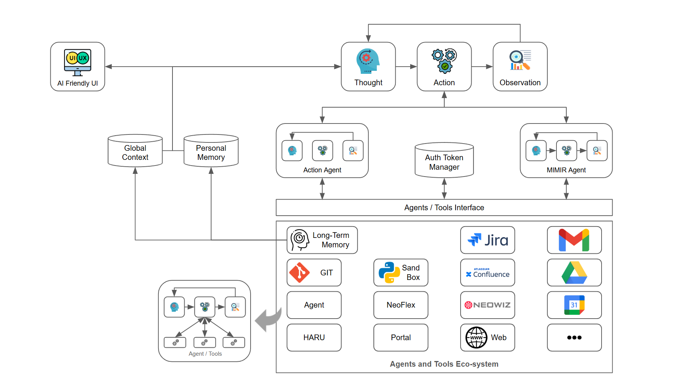
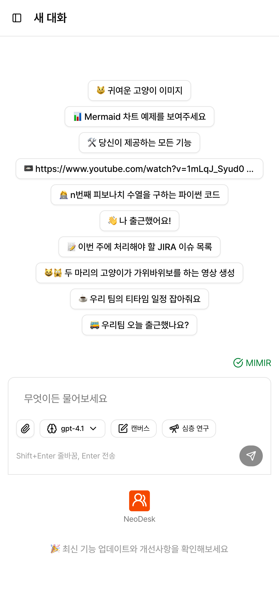

LangChain·LangGraph 기반의 모듈화된 AI Agent Core를 설계하고 코어 모듈을 개발. Tool Provider 추상화, ReAct / Deep Research / Plan-and-Execute / Reflexion+ToT 다중 워크플로우, Memory System, MCP 기반 외부 서비스 연동을 구현하여 전사 임직원 대상 Live 운영 중.
2025.03 — 2025.12 · 운영 중AI Agent 시스템 설계 · 코어 모듈 개발전사 Live 오픈
01 Metadata
기간
2025.03 — 2025.12 · 운영 중 — AI Agent Core 개발(03~06) → 인수인계 → NeoChat PRO 성능 실험·최적화(11~12)
임직원의 일정 관리, 문서 생성, 정보 검색 등 일상 업무가 파편화된 도구들에 분산되어 있어 반복 업무에 소요되는 시간이 컸고, 통합적인 업무 자동화가 이루어지지 못했습니다. 사내 지식(Confluence, Jira, Google Drive, Gmail 등)에 대한 접근과 활용도 비효율적이었습니다.
"하나의 Agent가 모든 걸 다 하게 만드는 것"이 아니라, "서로 다른 문제에는 서로 다른 워크플로우가 필요하다"는 전제에서 출발.
단순 질의응답은 ReAct가 적합하고, 깊이 있는 조사·작성은 Deep Research, 여러 단계로 분해되는 업무는 Plan-and-Execute, 품질이 중요한 작업은 Reflexion+ToT가 어울립니다. 이를 하나의 시스템 안에서 선택·혼용할 수 있는 구조가 필요했습니다.
03 Approach
AI Agent Core — 모듈화된 Agent 시스템
LangChain·LangGraph 기반으로 새로운 Agent·도구·워크플로우를 코어 수정 없이 추가할 수 있는 모듈 구조로 설계했습니다. LangGraph의 StateGraph를 활용해 Agent 실행 흐름을 노드-엣지 DAG로 정의하고, 각 노드가 독립적인 상태 전이와 조건부 라우팅을 수행하도록 구현했습니다.
Tool Provider 시스템 — SystemToolProvider, ThirdPartyToolProvider, MimirToolProvider를 CompositeToolProvider로 결합. 도구 출처가 서로 달라도 Agent 입장에서는 동일한 인터페이스로 호출.
다중 워크플로우 — ReAct Agent · Deep Research Agent · Plan-and-Execute Agent · Reflexion+ToT Agent를 상황에 맞게 선택·조합.
Memory System — Recall Memory 저장·검색. Personalized Context(사용자 개인 선호·이력)와 Global Context(조직 공통 지식)를 분리하여 개인화와 공통 지식의 간섭을 제거. 대화 턴 단위로 중요도 기반 메모리 압축(Summarization)과 TTL 기반 만료를 적용.
Mimir 연동 도구 — Gmail · Google Drive · Calendar · Jira · Wiki에 대한 의미론적 검색 및 CRUD.
MCP 기반 외부 서비스 연동 — 조직도 조회, 근퇴기록부, 포탈 검색 등 사내 서비스를 MCP 프로토콜로 Agent에 노출.

Figure 1. AI Agent Core — NeoChat PRO의 Agent 시스템 아키텍처.
왜 "Planner-Worker + Context 분리" 구조인가
LangGraph의 Planner-Worker 구조를 채택한 이유는, 사용자 요청을 의도 해석 → 도구 선택 → 실행 → 검증의 단계로 명시적으로 분해해야 관측·개선이 가능하기 때문입니다. 단일 프롬프트로 모든 단계를 섞어버리면 Langfuse 트레이스에서 어느 단계가 실패했는지 구분할 수 없고, 개선의 루프가 닫히지 않습니다. StateGraph의 조건부 엣지(conditional_edge)를 활용해 Planner가 선택한 워크플로우에 따라 실행 경로를 동적으로 분기하고, 각 노드의 입출력을 TypedDict 기반 State로 타입-세이프하게 관리합니다.
또한 Personalized / Global Context를 분리한 것은, 두 종류의 지식을 하나의 벡터 공간에 섞으면 개인 이력이 공용 답변에 새어 들어가거나, 반대로 공용 지식이 개인화를 덮어쓰는 문제가 발생했기 때문입니다. Personalized Context는 사용자별 Redis 키 네임스페이스에, Global Context는 공용 벡터 인덱스에 격리하여 검색 시 크로스 오염을 원천 차단했습니다.

Figure 2. NeoChat PRO — 전사 Live 운영 중인 화면.
04 Impact
전사 Live 오픈 — 전 임직원이 매일 사용하는 AI 컴패니언으로 자리잡음.
플러그인 방식의 Agent 확장 — 모듈화된 설계 덕분에 새로운 Agent·도구·워크플로우를 코어 수정 없이 추가 가능. 이후 SAGA, Mimir, Neodesk 등 후속 서비스가 같은 골격 위에 얹혀짐.
운영 관제 체계 — Langfuse · OpenTelemetry · Grafana 기반으로 Agent 호출, Tool 사용량, 실패 원인까지 추적 가능.
05 Takeaways
"단일 거대 Agent"가 아니라 "워크플로우 선택권" — 문제 유형에 따라 ReAct / Deep Research / Plan-and-Execute / Reflexion+ToT를 선택할 수 있게 만든 것이 결과적으로 품질·사용자 만족 모두에서 유리했음.
Tool Provider 추상화의 복리 효과 — System / ThirdParty / Mimir를 CompositeToolProvider로 묶어두자, 새로운 도구가 추가될 때마다 드는 비용이 선형이 아니라 상수에 가까워짐. 인수인계와 팀 확장에도 크게 기여.
Personalized / Global Context 분리는 "개인화"가 아니라 "오염 방지" — 처음에는 개인화 기능을 위한 설계였지만, 실제 효과는 공용 지식과 개인 이력이 서로 간섭하지 않게 만든 것이 더 컸음.